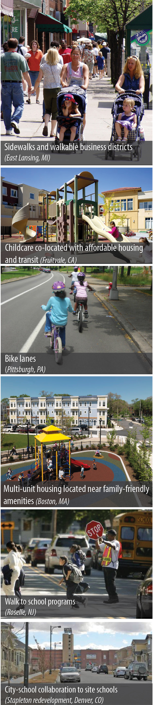

Child- and Family-Friendly Planning
Children and young families are critical to community sustainability. Planners have a critical role to play in ensuring that the needs of children and young families are reflected in comprehensive planning, site planning and zoning, and service design.
-
Planning for Family-Friendly Communities: Motivators, Barriers, and Benefits
Mildred E. Warner and Joseph Rukus. 2013. Issue Brief. Ithaca, NY: Department of City and Regional Planning, Cornell University.
Based on a 2008 survey of planners from around the country, this issue brief explores attitudes, actions, and barriers surrounding family-friendly planning. It also describes new research showing wider community benefits of family friendly planning.
-
Planning for Family Friendly Communities
Evelyn Israel and Mildred Warner. 2008. Planning Advisory Service (PAS) Memo, American Planning Association, Chicago, IL. November 2008
This memo discusses results from a 2008 survey, conducted by the APA and Cornell University, showing that planners from across the country are remarkably positive about the importance of families to communities and the role planners can play in designing communities that better meet families' needs.
-
The Economic Importance of Families with Children.
Mildred E. Warner and Rebecca Baran-Rees. 2012. Issue Brief, Department of City and Regional Planning, Cornell University.
While some strategies for economic development have included marketing cities as retirement destinations for wealthy adults ("grey gold") or as creative hot-beds for young talent ("creative class"), vibrant communities need people of all ages for long-term economic stability.
-
The Importance of Ensuring Adequate Child Care in Planning Practice (2011)
Prepared by the American Planning Association, as part of a collaborative project with Cornell University Linking Economic Development and Child Care Project, with funding from the W.K. Kellogg Foundation and the Peppercorn Foundation.
Through five key points, this briefing paper explores the social, economic, and environmental benefits of a robust local system of child care and early education programs for the child, family, and community. It provides useful examples of policies, strategies, and on-the-ground child care projects for planners seeking to enhance child care services to build family-friendly communities.
-
Child Care and Community Development
Kristen Anderson and Ellen Dektar, Planning for Family Friendly Communities Briefing Paper, April 2010.
This paper details how a robust local system of child care and early education programs has social, economic, and environmental benefits for the child, family and community. It provides useful examples of policies, strategies and on‐the‐ground child care projects for planners seeking to enhance child care services to build family friendly communities.
-
Parks, Open Space and Recreation: Expanding Lifestyle Amenities for Families,
Kathleen Rose Imbriano, Planning for Family Friendly Communities Briefing Paper, April 2010.
This issue brief explores ways that planners can support and promote parks, open space and recreation to meet the public health, social interaction, and childhood development needs of families. Parks and open spaces are an integral part of a community’s infrastructure and essential to the creation of family‐friendly neighborhoods.
Issue Briefs and Case Studies: APA National Conference, 2009
These issue briefs and case studies were developed for the American Planning Association national conference held April 2009. Cornell is working with APA to transform them into APA publications that will be made available to planners across the country.
Issue Briefs
"Comprehensive Planning for Family-Friendly Communities"
Comprehensive plans present the needs, goals, and objectives of a community. Families with children have needs in housing, transportation, and community design which may not be adequately addressed without special consideration. This issue brief will discuss how planners can incorporate these considerations into their comprehensive plans, while also providing suggestions on navigating the politics of the process.
"Reaching Out: Youth and Family Participation"
In the APA/Cornell survey, 48% of planners noted the need to have parents actively involved in the planning process. When asked follow-up questions, however, less than half took even simple steps to make such participation possible. Parents and children hold unique and valuable information about a community that is unlikely to be ascertained elsewhere. This brief discusses methods of increasing parental and youth engagement.
"Housing and Family-Friendly Communities"
Planners need to consider many factors in meeting the housing needs of families. They should determine what type of housing is required and what the surrounding neighborhoods should look like. They need to know how demographic and economic trends may alter future housing demands. Planners also must consider whether the housing supplied (owner-occupied or rental) is going to be affordable for families after energy and commuting costs. This brief examines these issues, while highlighting some innovative approaches taken by planners to meet these unique demands.
"Transportation and Family-Friendly Communities"
Families will not invest in a community unless they have access to its amenities, and access begins with transportation. Planners need to reconsider the role of transportation within their communities - how and why roads are designed the way they are; whether more bicycle- and pedestrian-friendly infrastructure should be developed - to ensure families have the access they require. This brief discusses four major issues in family- friendly transportation including the "Complete Streets" movement, the "Safe Routes to School" program, trip chaining, and transit-oriented development.
"Expanding Lifestyle Amenities for Families: Parks and Recreation"
Accessible recreational opportunities and environments are important for the development of family friendly communities. Parks are more than just places to enjoy leisure activity; they have been shown to enhance childhood development, improve neighborhood safety and public health, and foster local arts. Moreover, investments in parks and recreation may be easier to obtain than other "family friendly" initiatives, with local municipalities demonstrating a willingness to implement zoning changes for open green space.
Case Studies
East Lansing prides itself on the quality of life it provides for its citizens. It offers families safe neighborhoods, access to quality childcare, an affordable housing stock, and a low cost of living. It is active in downtown redevelopment, engaging in "better design" practices such as mixed-use redevelopments and open space greenways, and is working to improve its transportation network.
Trenton has a diverse population with a median income that is 70% of the national average. It has struggled economically. Within this challenging context, the City has launched innovative family friendly initiatives. Trenton was named America's "Most Livable City" in 2005, showing that even challenged communities can provide family friendly amenities.
The City of Burlington is a healthy, green, and walkable city. It has been named "One of America's Best Places to Raise Your Kids" by Business Week. This case study examines Burlington's strategies for maintaining its family-friendly nature, particularly relating to its transportation, recreation, participation, and housing policies.
The City of Frederick is implementing several programs to become more "family friendly," particularly programs which promote affordable housing. The City has had to engage in inter- governmental cooperation to address budget and timing issues as it pursues program implementation.
Miramar planners are re-visioning their community as a family-friendly, full-service city, and are promoting density and sustainability in the midst of south Florida sprawl. Initiatives take full advantage of the community's green spaces, promote alternative forms of transportation, minimize environmental impact, and educate youth about sustainability.
The Village of Lombard is a family-friendly city in northeast Illinois that promotes family togetherness by providing accessible recreation and social outlets for all segments of the residential population, regardless of their socioeconomic situation. “The key is free.”
Weston, WI
Rockwall, TX